Last day of classes: Dec. 5, 2026
Loading...
Xinxing.Wu@kysu.edu
Xinxing Wu
<p class='titlep'> </p> # LocalMind Studio <hr> <br> Xinxing Wu
# Outline [<p class="hover-underline-animation">Environment and Strucutrue</p>](#/ch1) [<p class="hover-underline-animation">Introduction</p>](#/ch2) [<p class="hover-underline-animation">Install Ollama</p>](#/ch3) [<p class="hover-underline-animation">Download local models</p>](#/ch4)
# Outline (Cont.) [<p class="hover-underline-animation">Test models in terminal</p>](#/ch5) [<p class="hover-underline-animation">Install Docker Desktop</p>](#/ch6) [<p class="hover-underline-animation">Install Open WebUI</p>](#/ch7) [<p class="hover-underline-animation">Connect Open WebUI to Ollama</p>](#/ch8)
# Outline (Cont.) [<p class="hover-underline-animation">Choose default models</p>](#/ch9) [<p class="hover-underline-animation">Set up RAG</p>](#/ch10) [<p class="hover-underline-animation">Recommended RAG settings</p>](#/ch11) [<p class="hover-underline-animation">Daily use workflow</p>](#/ch12)
# Outline (Cont.) [<p class="hover-underline-animation">Offline use</p>](#/ch13) [<p class="hover-underline-animation">Troubleshooting</p>](#/ch14) [<p class="hover-underline-animation">Best model usage examples</p>](#/ch15) [<p class="hover-underline-animation">Summary</p>](#/ch16)
<p class="definition-rainbow-title">Environment and Strucutrue</p>
<div class="definition-com-container"> <div class="definition-com-title">Structure</div> <div class="definition-com-shadebox"> <div style="width: 800px;"></div> Ollama or LM Studio + Open WebUI + Qwen/DeepSeek/Gemma/Llama model + RAG <hr> - Ollama is simple for local model running, and its model library already includes families like Qwen3 in sizes from small models to large MoE variants. </div> </div> <div class="definition-com-container"> <div class="definition-com-title">Structure (Cont.)</div> <div class="definition-com-shadebox"> <div style="width: 800px;"></div> - LM Studio is also good, especially if you prefer a GUI; its system requirements recommend at least 16 GB RAM and 4 GB dedicated VRAM. - Open WebUI can run self-hosted/offline, supports runners such as Ollama and OpenAI-compatible APIs, and includes RAG features. </div> </div> <div class="definition-com-container"> <div class="definition-com-title">Model recommendations</div> <div class="definition-com-shadebox"> <div style="width: 800px;"></div> | Purpose | Good local models | | -------------------------- | ------------------------------------------------------------------------ | | General research assistant | **Qwen3 14B/32B**, **Gemma 4 12B**, **Llama 3.3 70B** if hardware allows | | Reasoning/math/coding | **DeepSeek-R1-Distill 14B/32B/70B**, **Qwen3-Coder** | | Coding assistant | **Qwen3-Coder-30B-A3B**, Qwen3-Coder-Next, DeepSeek-Coder/R1 distill | | Lightweight laptop use | Qwen3 4B/8B, Gemma 4 12B, DeepSeek-R1-Distill 8B | | Multimodal/image-text | Gemma 4, Llama 4 Scout/Maverick, Qwen3-VL | </div> </div> <div class="definition-com-container"> <div class="definition-com-title">Model recommendations</div> <div class="definition-com-shadebox"> <div style="width: 800px;"></div> - Qwen3 is a strong general choice because it includes dense and MoE models from 0.6B to 235B parameters, supports thinking/non-thinking modes, and is publicly accessible under Apache 2.0 according to its technical report. - DeepSeek-R1 is especially attractive for reasoning; its released distill models include 1.5B, 7B, 8B, 14B, 32B, and 70B checkpoints. </div> </div> <div class="definition-com-container"> <div class="definition-com-title">Model recommendations (Cont.)</div> <div class="definition-com-shadebox"> <div style="width: 800px;"></div> - Gemma 4 12B is worth considering for laptop-friendly multimodal use; Google describes it as designed to bring high-performance multimodal intelligence directly to laptops. - Llama 4 Scout and Maverick are open-weight multimodal MoE models, but they are more hardware-demanding. </div> </div> <div class="definition-com-container"> <div class="definition-com-title">Hardware recommendation</div> <div class="definition-com-shadebox"> <div style="width: 800px;"></div> | Hardware | What to run | | --------------------------- | -------------------------------------------------- | | 16–32 GB RAM, no strong GPU | 4B–8B quantized models | | 16 GB GPU VRAM | 8B–14B models comfortably | | 24 GB GPU VRAM | 14B–32B quantized models | | 48 GB GPU VRAM | 32B very good; some 70B quantized models possible | | 2×48 GB or more | 70B models much better; larger MoE models possible | </div> </div> <div class="definition-com-container"> <div class="definition-com-title">Hardware recommendation (Cont.)</div> <div class="definition-com-shadebox"> <div style="width: 800px;"></div> - For local LLMs, VRAM is usually more important than raw GPU speed. - Quantization is key: Q4 or Q5 GGUF models can greatly reduce memory while preserving much of the quality. </div> </div> <div class="definition-com-container"> <div class="definition-com-title">VRAM</div> <div class="definition-com-shadebox"> <div style="width: 800px;"></div> - VRAM (Video Random Access Memory) is a specialized type of computer memory dedicated to storing image data and visual assets. Acting as a high-speed holding zone, it provides your graphics card (GPU) with instant access to the textures, shapes, and lighting calculations required to render visuals smoothly. </div> </div> <div class="definition-com-container"> <div class="definition-com-title">My computer has</div> <div class="definition-com-shadebox"> <div style="width: 800px;"></div> RAM: 32 GB GPU: 4 GB Storage: more 150 GB free CPU: Intel i7-1370P </div> </div> <div class="definition-com-container"> <div class="definition-com-title">Structure</div> <div class="definition-com-shadebox"> <div style="width: 800px;"></div> - Ollama = local model engine - Open WebUI = ChatGPT-like interface - Qwen3-8B = daily assistant for writing, summarizing, teaching, email, grants - DeepSeek-R1-8B = reasoning assistant for logic, math, coding, analysis - RAG = local document search over your PDFs, Word files, papers, grants </div> </div> > Ollama + Open WebUI + Qwen3-8B + DeepSeek-R1-8B + RAG
<p class="definition-rainbow-title">Introduction</p>
<div class="question-container"> <div class="question-title">System will look like this</div> <div class="question-shadebox"> <div style="width: 800px;"></div> LocalMind Studio Lite ``` My computer ↓ Open WebUI ↓ Ollama ↓ Qwen3-8B or DeepSeek-R1-8B ↓ RAG knowledge base with my local documents ``` </div> </div> <div class="definition-container"> <div class="definition-title">Roles of each part</div> <div class="definition-shadebox"> <div style="width: 800px;"></div> | Part | Role | | ------------------ | --------------------------------------------------------- | | **Ollama** | Runs local AI models on your computer | | **Open WebUI** | Gives you a ChatGPT-like browser interface | | **Qwen3-8B** | Main daily assistant: writing, summary, teaching, grants | | **DeepSeek-R1-8B** | Reasoning assistant: math, logic, coding, analysis | | **RAG** | Lets the model answer using your uploaded local documents | </div> </div> <div class="definition-container"> <div class="definition-title">Roles of each part (Cont.)</div> <div class="definition-shadebox"> <div style="width: 800px;"></div> - Open WebUI is designed as a self-hosted AI interface, supports Ollama, and can operate locally/offline. </div> </div>
<p class="definition-rainbow-title">Install Ollama</p>
<div class="question-container"> <div class="question-title">Open PowerShell</div> <div class="question-shadebox"> <div style="width: 800px;"></div> Start Menu → Search “PowerShell” → Run as Administrator </div> </div> <div class="question-container"> <div class="question-title">Install Ollama</div> <div class="question-shadebox"> <div style="width: 800px;"></div> ``` irm https://ollama.com/install.ps1 | iex ``` - Ollama provides this Windows PowerShell installation command on its official Windows download page. </div> </div> <p>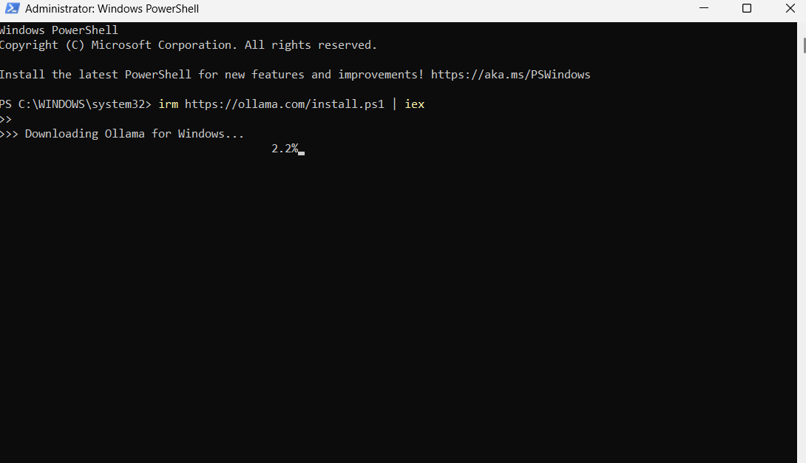</p> <p>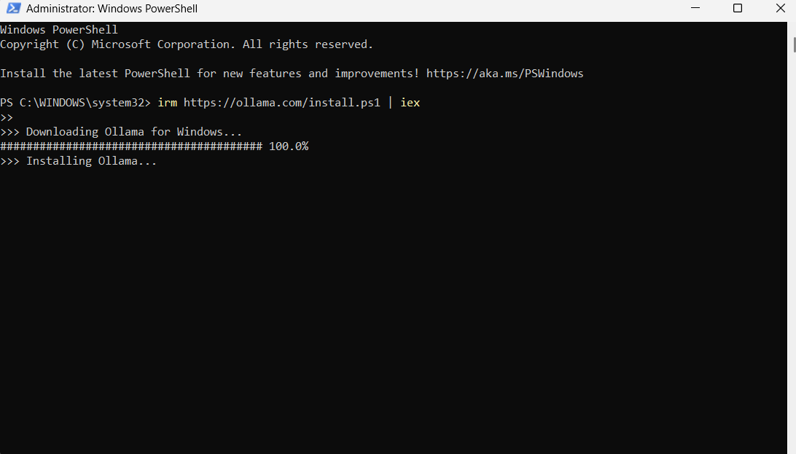</p> <div class="question-container"> <div class="question-title">Check installation</div> <div class="question-shadebox"> <div style="width: 800px;"></div> After installation, close PowerShell and open it again. ``` ollama --version ``` Then run: ``` ollama list ``` </div> </div> <p>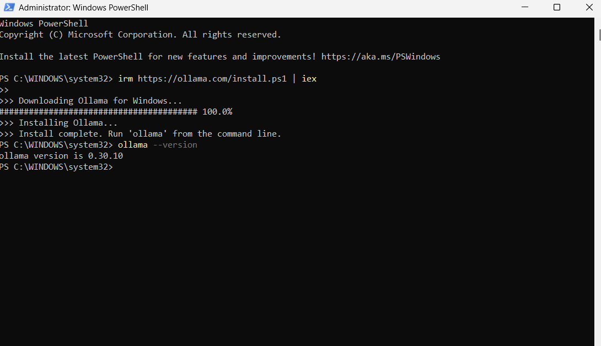</p> <div class="definition-container"> <div class="definition-title">Notes</div> <div class="definition-shadebox"> <div style="width: 800px;"></div> At this point, the list may be empty. That is normal. </div> </div> <p>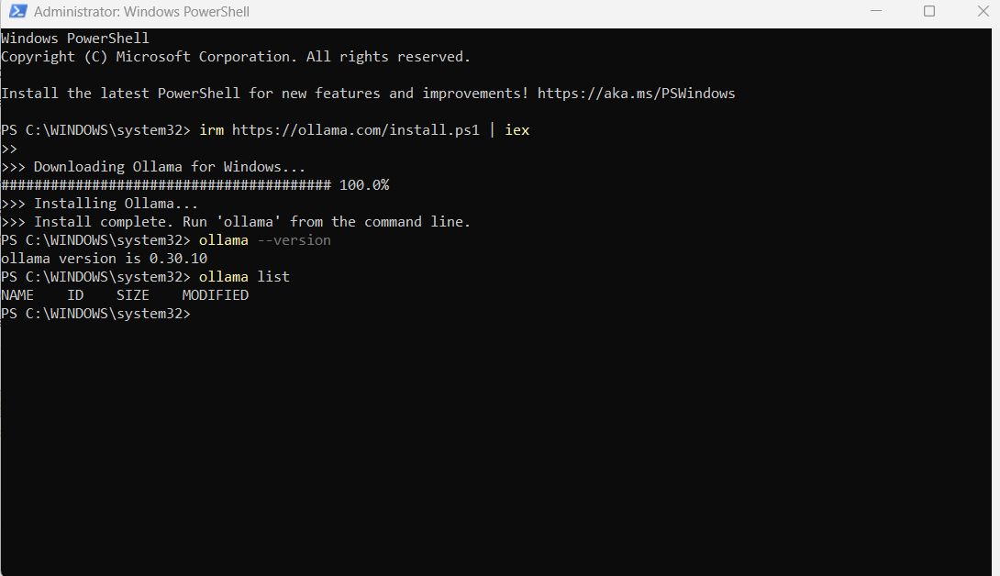</p>
<p class="definition-rainbow-title">Download local models</p>
<div class="question-container"> <div class="question-title">Download Qwen3-8B</div> <div class="question-shadebox"> <div style="width: 800px;"></div> This will be the main daily assistant. ``` ollama pull qwen3:8b ``` </div> </div> <p>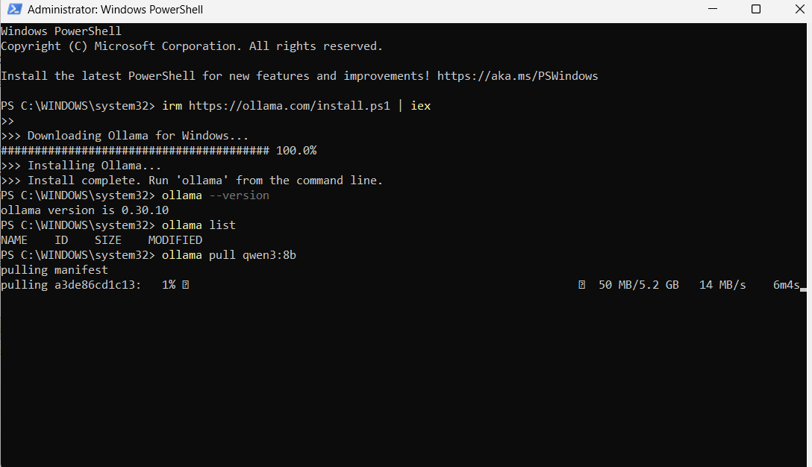</p> <div class="question-container"> <div class="question-title">Download DeepSeek-R1-8B</div> <div class="question-shadebox"> <div style="width: 800px;"></div> This will be the reasoning assistant. ``` ollama pull deepseek-r1:8b ``` </div> </div> <p>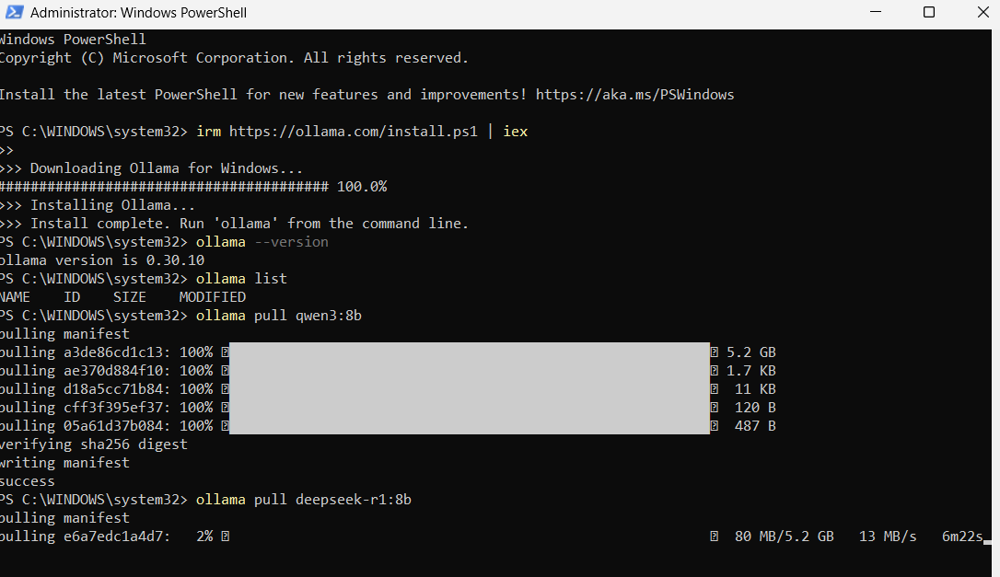</p> <div class="definition-container"> <div class="definition-title">Notes</div> <div class="definition-shadebox"> <div style="width: 800px;"></div> DeepSeek-R1-Distill models include smaller distilled versions such as 8B, 14B, and 32B, but for your computer the 8B version is the best starting point. </div> </div> <div class="question-container"> <div class="question-title">Download a local embedding model for RAG</div> <div class="question-shadebox"> <div style="width: 800px;"></div> For document search/RAG, install: ``` ollama pull nomic-embed-text ``` - This model helps convert your PDFs/documents into searchable vectors. </div> </div> <p>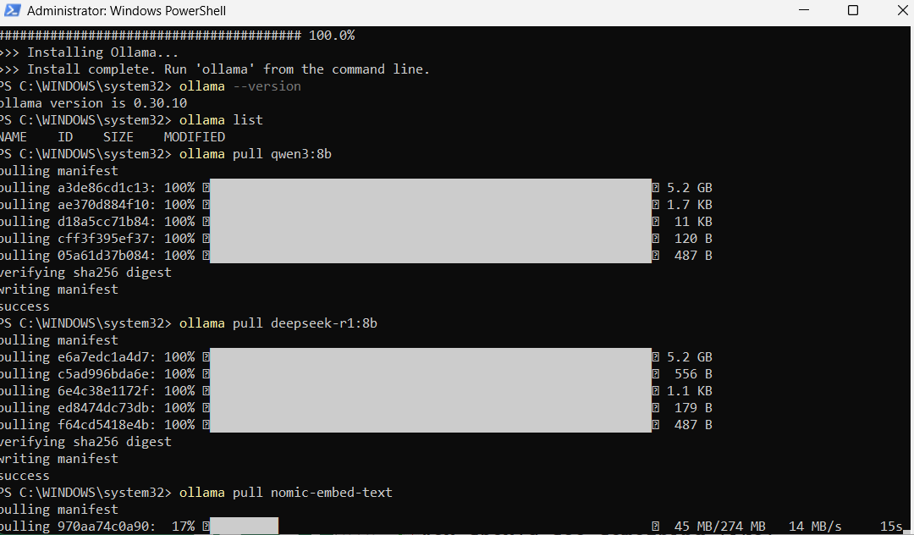</p> <div class="question-container"> <div class="question-title">Checking</div> <div class="question-shadebox"> <div style="width: 800px;"></div> ``` ollama list ``` You should see something like: ``` qwen3:8b deepseek-r1:8b nomic-embed-text ``` </div> </div> <p>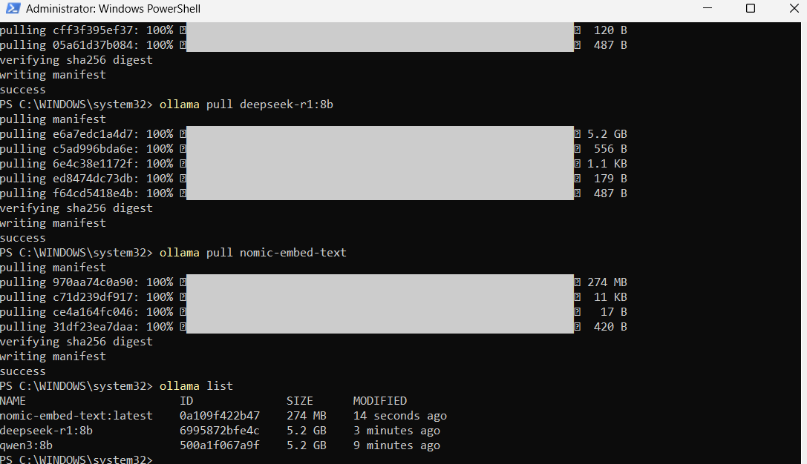</p>
<p class="definition-rainbow-title">Test models in terminal</p>
<div class="question-container"> <div class="question-title">Test Qwen3-8B</div> <div class="question-shadebox"> <div style="width: 800px;"></div> Run ``` ollama run qwen3:8b ``` <hr> Try this prompt: ``` Please explain graph neural networks in simple words. ``` To exit, type: ``` /bye ``` </div> </div> <p>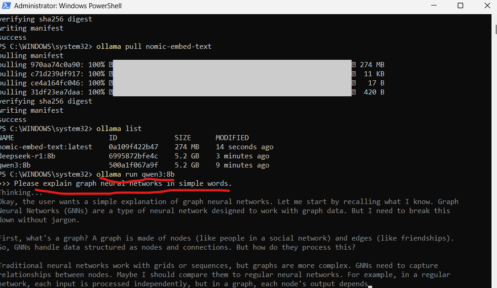</p> <div class="question-container"> <div class="question-title">Test DeepSeek-R1-8B</div> <div class="question-shadebox"> <div style="width: 800px;"></div> Run ``` ollama run deepseek-r1:8b ``` Try ``` Solve this step by step: If a model has 80% precision and 70% recall, what is the F1 score? ``` To exit ``` /bye ``` </div> </div> <p>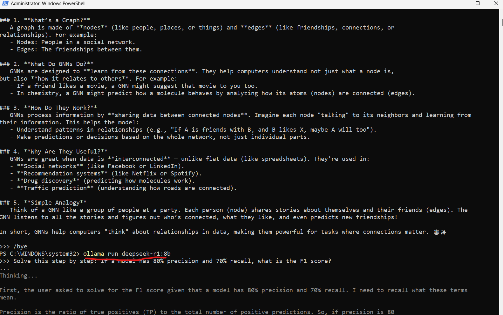</p>
<p class="definition-rainbow-title">Install Docker Desktop</p>
> Open WebUI is easiest to run through Docker. <div class="question-container"> <div class="question-title">Install/enable WSL</div> <div class="question-shadebox"> <div style="width: 800px;"></div> Open PowerShell as Administrator and run: ``` wsl --install ``` </div> </div> <div class="question-container"> <div class="question-title">Install Docker Desktop</div> <div class="question-shadebox"> <div style="width: 800px;"></div> Download and install Docker Desktop for Windows https://www.docker.com/products/docker-desktop/ (Download for Windows (AMD64) button to download the installer, usually named Docker Desktop Installer.exe) Locate the downloaded Docker Desktop Installer.exe file, right-click it, and select Run as administrator. During installation, allow: Use WSL 2 backend (When the configuration window appears, make sure the Use WSL 2 instead of Hyper-V option is checked) Restart your computer if Docker asks. </div> </div> <p>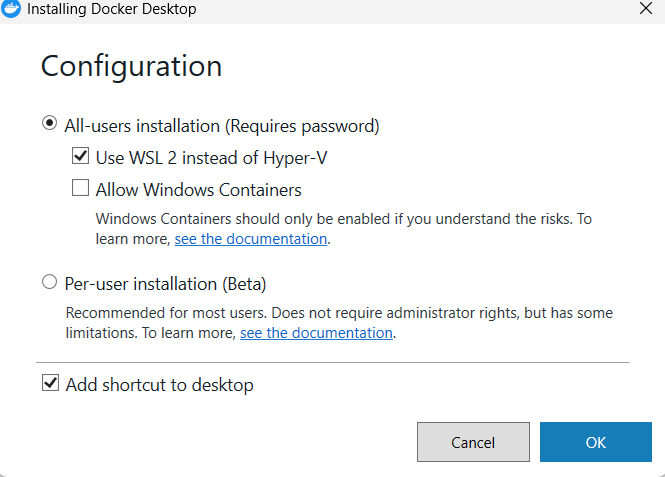</p> <p>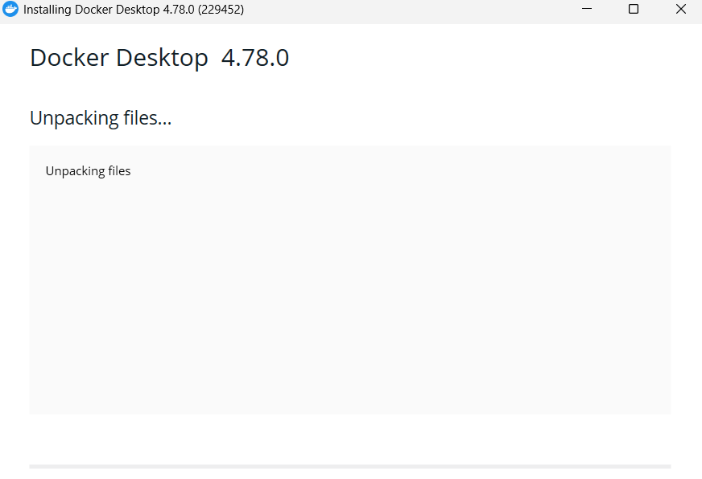</p> <p>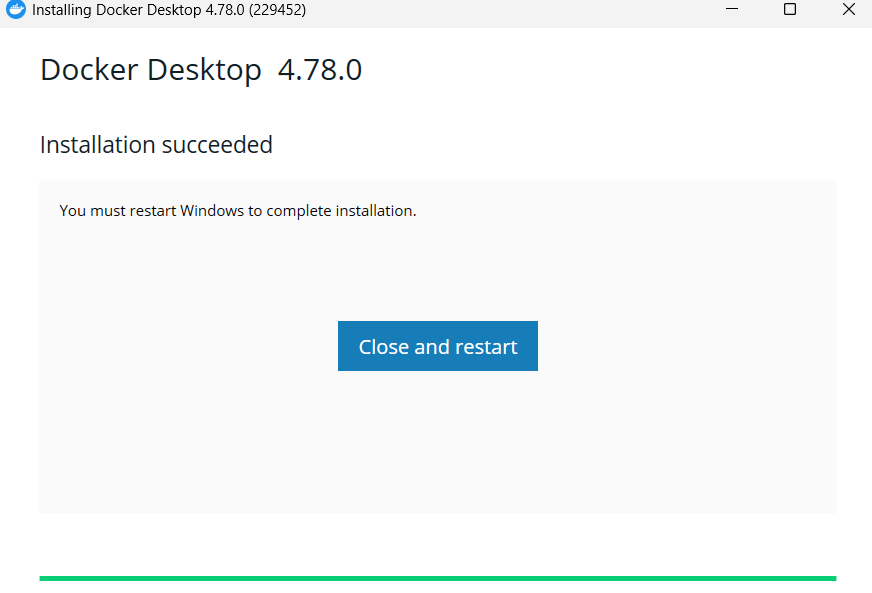</p> <div class="question-container"> <div class="question-title">Test Docker</div> <div class="question-shadebox"> <div style="width: 800px;"></div> Open PowerShell and run: ``` docker --version ``` Then run ``` docker ps ``` If Docker is running, you should not see an error. Open WebUI officially recommends Docker for most users and supports Windows. </div> </div> <p>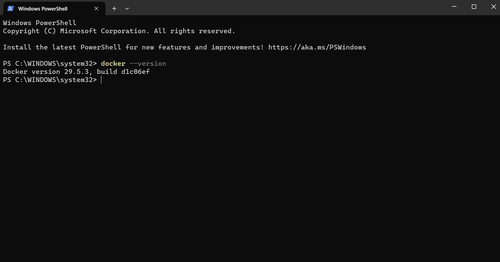</p> <p>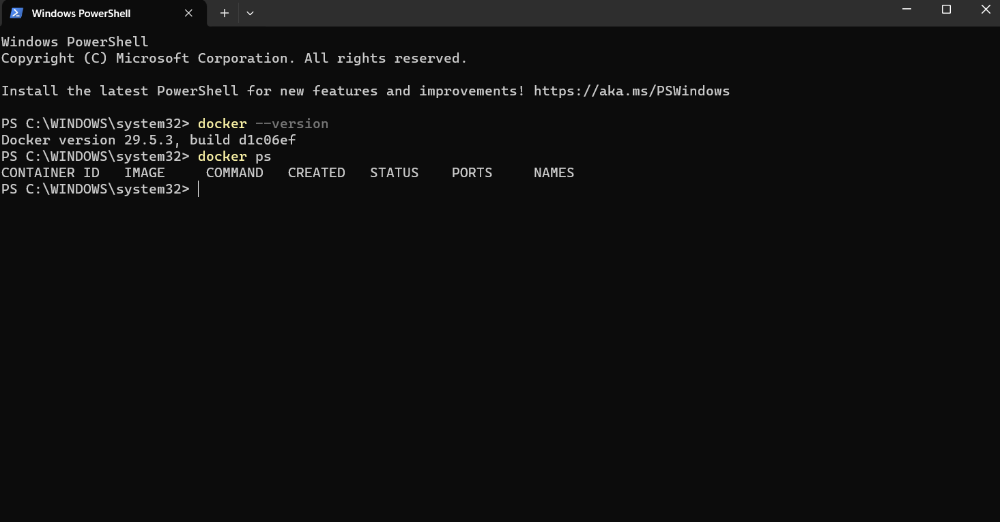</p>
<p class="definition-rainbow-title">Install Open WebUI</p>
<div class="question-container"> <div class="question-title">Run Open WebUI</div> <div class="question-shadebox"> <div style="width: 800px;"></div> In PowerShell, run this command: ``` docker run -d -p 3000:8080 --add-host=host.docker.internal:host-gateway -v open-webui:/app/backend/data --name open-webui --restart always ghcr.io/open-webui/open-webui:main ``` Wait for it to finish. If successful, it will show a long ID like: ``` a7b9c3f... ``` </div> </div> <p>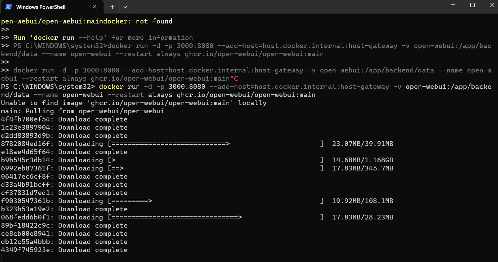</p> <div class="definition-container"> <div class="definition-title">Notes</div> <div class="definition-shadebox"> <div style="width: 800px;"></div> Then check: ``` docker ps ``` </div> </div> <p>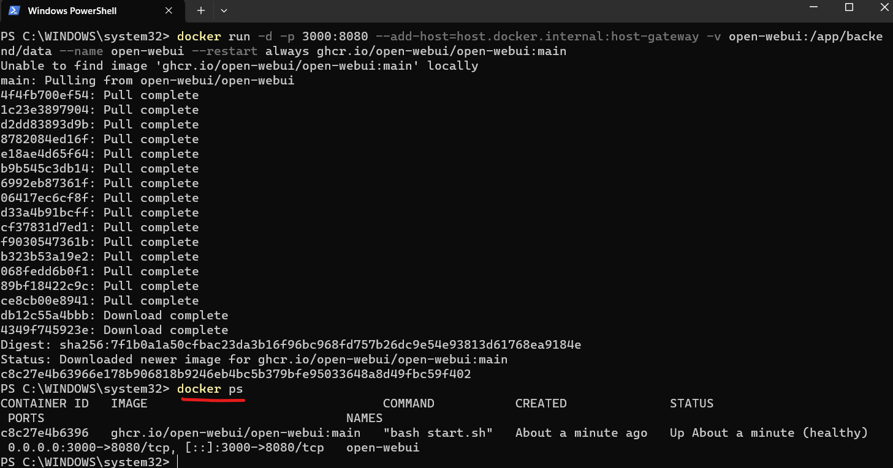</p> <div class="definition-container"> <div class="definition-title">Notes</div> <div class="definition-shadebox"> <div style="width: 800px;"></div> This creates an Open WebUI container and saves your data in a persistent Docker volume, so your settings/documents are not lost when restarting. Open WebUI’s Docker setup uses port 3000:8080 and a persistent /app/backend/data volume. </div> </div> <div class="question-container"> <div class="question-title">Open Open WebUI</div> <div class="question-shadebox"> <div style="width: 800px;"></div> Open your browser and go to: ``` http://localhost:3000 ``` Create the local admin account. This is local to the computer. </div> </div> <p>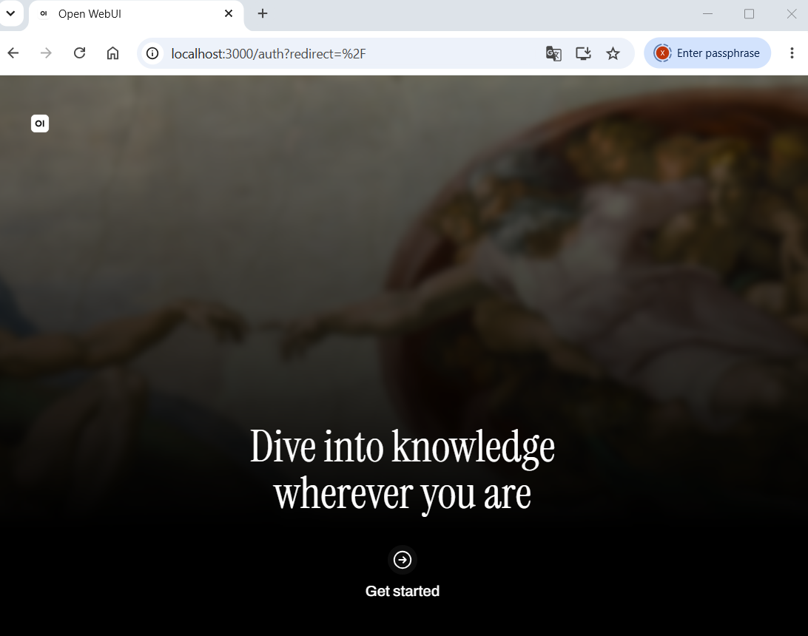</p> <p>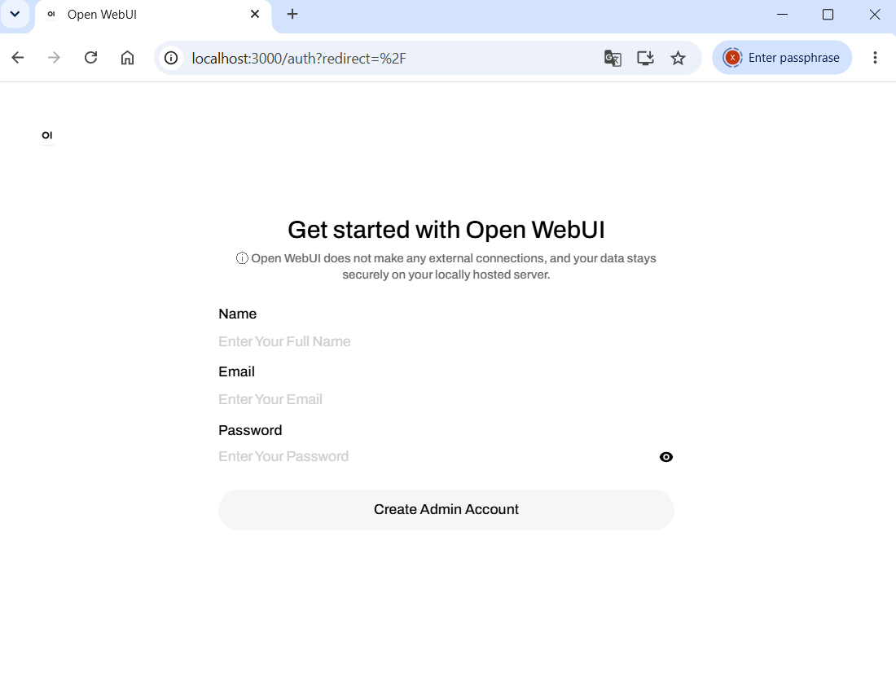</p> <p>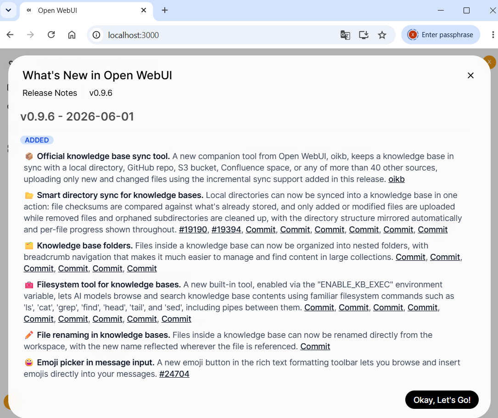</p> <p>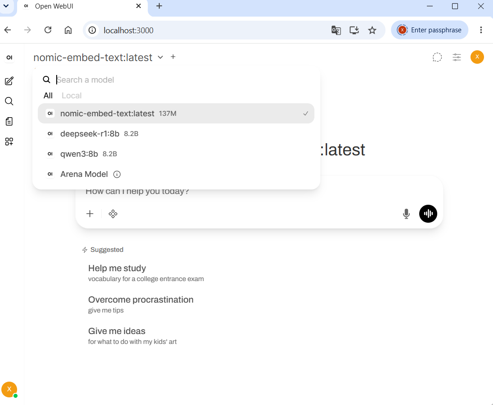</p> <div class="question-container"> <div class="question-title">Notes</div> <div class="question-shadebox"> <div style="width: 800px;"></div> If it says container name already exists Run: ``` docker start open-webui ``` <hr> Open your browser again and go to: ``` http://localhost:3000 ``` Create the local admin account. This is local to the computer. </div> </div>
<p class="definition-rainbow-title">Connect Open WebUI to Ollama</p>
<div class="question-container"> <div class="question-title">Check that Ollama is running</div> <div class="question-shadebox"> <div style="width: 800px;"></div> In your browser, open: ``` http://localhost:11434 ``` You should see something like: ``` Ollama is running ``` If not, run this in PowerShell: ``` ollama serve ``` If it says Ollama is already running, that is okay. </div> </div> <p>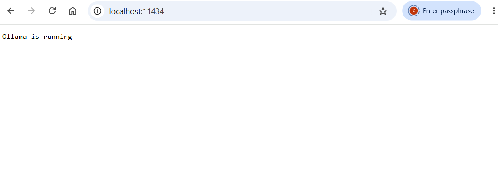</p> <div class="question-container"> <div class="question-title">Connect Open WebUI to Ollama</div> <div class="question-shadebox"> <div style="width: 800px;"></div> In Open WebUI: > Admin Panel → Settings → Connections → Ollama Use this Ollama URL: ``` http://host.docker.internal:11434 ``` Save. Now Open WebUI should show your local models: ``` qwen3:8b deepseek-r1:8b ``` </div> </div> <p>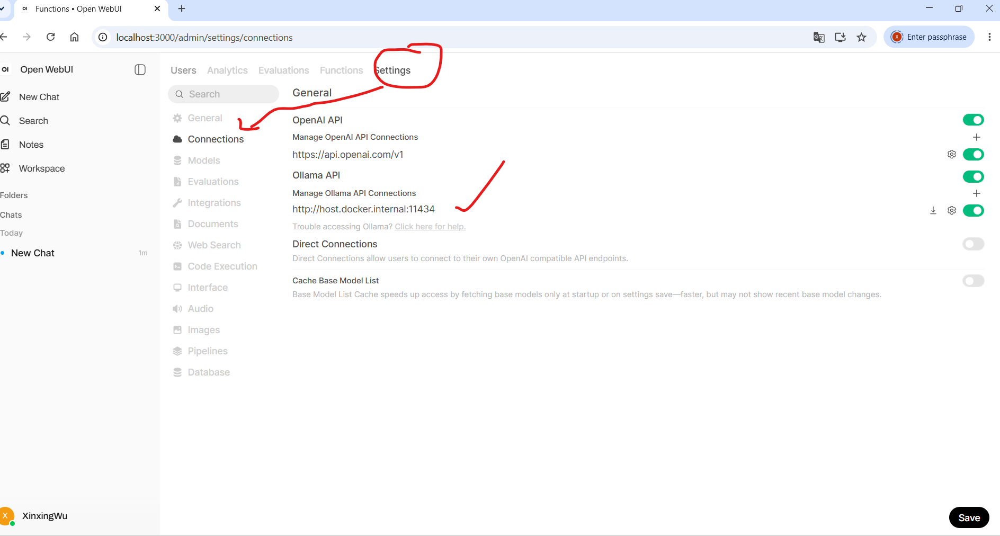</p>
<p class="definition-rainbow-title">Choose default models</p>
<div class="question-container"> <div class="question-title">Use Qwen3-8B as default</div> <div class="question-shadebox"> <div style="width: 800px;"></div> For normal work, choose: ``` qwen3:8b ``` Use it for: ``` email polishing grant writing paper summarization course preparation general questions document-based Q&A ``` </div> </div> <div class="question-container"> <div class="question-title">Use DeepSeek-R1-8B for reasoning</div> <div class="question-shadebox"> <div style="width: 800px;"></div> Choose: ``` deepseek-r1:8b ``` Use it for: ``` logic math coding debugging technical analysis step-by-step reasoning ``` </div> </div>
<p class="definition-rainbow-title">Set up RAG</p>
> RAG lets the model use your own local documents. <div class="question-container"> <div class="question-title">Configure local embeddings</div> <div class="question-shadebox"> <div style="width: 800px;"></div> In Open WebUI, go to something similar to: > Admin Panel → Settings → Documents / RAG / Embeddings The exact menu name may vary by Open WebUI version. Set: ``` Embedding engine: Ollama Embedding model: nomic-embed-text Ollama URL: http://host.docker.internal:11434 ``` Save. This keeps document embedding local. </div> </div> <p>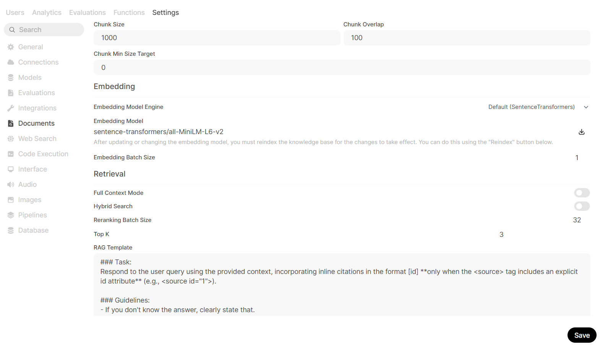</p> <div class="question-container"> <div class="question-title">Set Embedding Model Engine to Ollama</div> <div class="question-shadebox"> <div style="width: 800px;"></div> On the right side of: > Embedding Model Engine click the dropdown: > Default (SentenceTransformers) Change it to: > Ollama </div> </div> <p>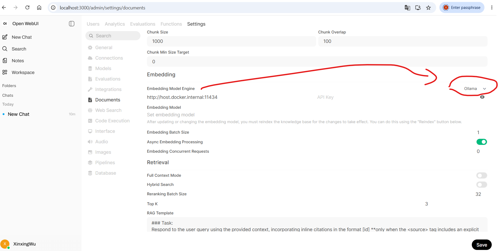</p> <div class="question-container"> <div class="question-title">Set Embedding Model</div> <div class="question-shadebox"> <div style="width: 800px;"></div> Under: > Embedding Model replace the current text: > sentence-transformers/all-MiniLM-L6-v2 With > nomic-embed-text </div> </div> <p>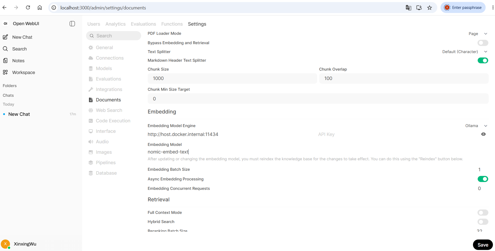</p> <div class="question-container"> <div class="question-title">Notes</div> <div class="question-shadebox"> <div style="width: 800px;"></div> No API key is needed For Ollama, you do not need an API key. The API key box is only for cloud services such as OpenAI, Cohere, etc. Since you are using: Ollama you can leave the API key empty. That is good for privacy. </div> </div> <div class="question-container"> <div class="question-title">Create a Knowledge collection</div> <div class="question-shadebox"> <div style="width: 800px;"></div> Go to: > Workspace → Knowledge → New Knowledge Create collections such as: ``` Grant Documents My Papers Course Materials NIH R15 NSF CAREER KCFC Conference Student Research ``` </div> </div> <div class="question-container"> <div class="question-title">Create a Knowledge collection (Cont.)</div> <div class="question-shadebox"> <div style="width: 800px;"></div> - Open WebUI’s Knowledge feature is designed for uploading documents that the AI can search and reason over. </div> </div> <p>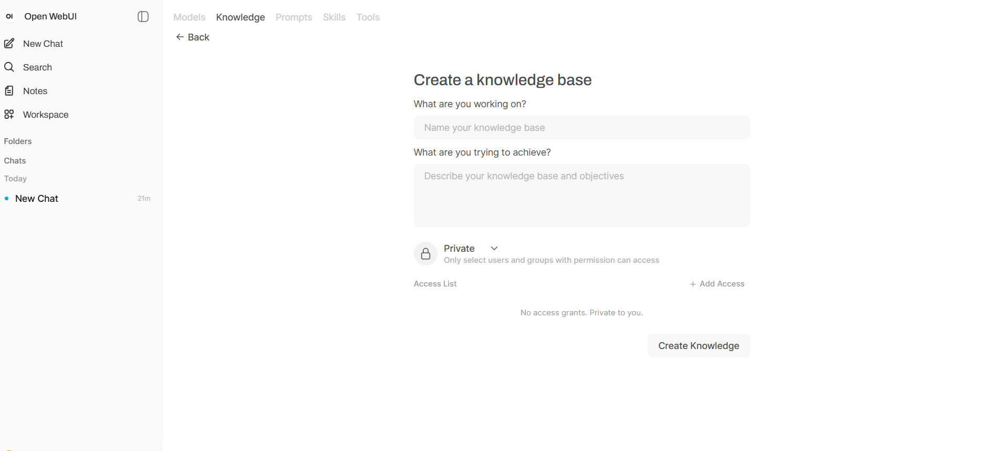</p> <p>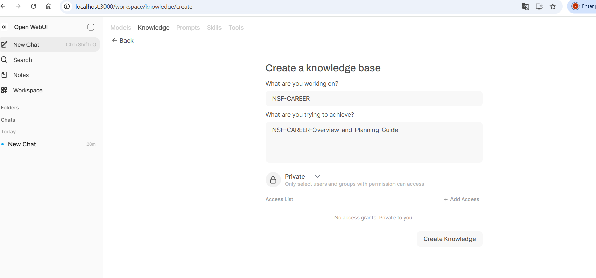</p> <div class="question-container"> <div class="question-title">Upload documents</div> <div class="question-shadebox"> <div style="width: 800px;"></div> Upload files such as: ``` PDF DOCX TXT HTML CSV Markdown code files ``` </div> </div> <div class="question-container"> <div class="question-title">Upload documents (Cont.)</div> <div class="question-shadebox"> <div style="width: 800px;"></div> For example, upload: ``` proposal drafts course syllabi research papers review comments NIH/NSF templates conference agenda files ``` - Wait until indexing finishes. </div> </div> <p>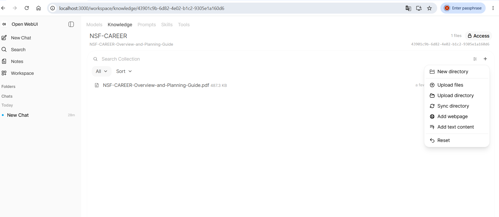</p> <div class="question-container"> <div class="question-title">Use RAG in chat</div> <div class="question-shadebox"> <div style="width: 800px;"></div> In a new chat, choose: ``` qwen3:8b ``` Then attach or select your Knowledge collection. Depending on your Open WebUI version, you may select it using a Knowledge button, an attachment option, or by typing something like # and selecting the collection. </div> </div> <p>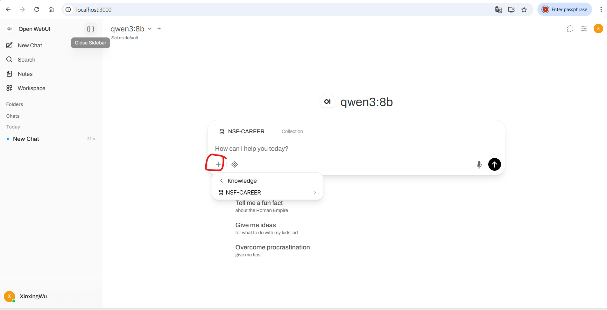</p> <div class="question-container"> <div class="question-title">Use RAG in chat (Cont.)</div> <div class="question-shadebox"> <div style="width: 800px;"></div> Try: ``` Using only the uploaded Grant Documents, summarize the key aims and identify weak points. ``` Or: ``` Based on my uploaded Course Materials, prepare a lecture outline for undergraduate students. ``` </div> </div>
<p class="definition-rainbow-title">Recommended RAG settings</p>
<div class="question-container"> <div class="question-title">Notes</div> <div class="question-shadebox"> <div style="width: 800px;"></div> Because GPU is only 4 GB, keep settings moderate. Use: ``` Context length: 4096 RAG top-k: 3 to 5 Chunk size: 800 to 1200 Chunk overlap: 100 to 150 Default model: qwen3:8b ``` </div> </div> <div class="question-container"> <div class="question-title">Notes</div> <div class="question-shadebox"> <div style="width: 800px;"></div> Avoid very large context windows at first, such as: ``` 32768 65536 ``` They may make your computer slow. </div> </div>
<p class="definition-rainbow-title">Daily use workflow</p>
<div class="question-container"> <div class="question-title">Daily use workflow</div> <div class="question-shadebox"> <div style="width: 800px;"></div> Each day, you can use it like this. Start Ollama Usually Ollama starts automatically. </div> </div> <div class="question-container"> <div class="question-title">Daily use workflow (Cont.)</div> <div class="question-shadebox"> <div style="width: 800px;"></div> Check: ``` ollama list ``` If needed: ``` ollama serve ``` </div> </div> <div class="question-container"> <div class="question-title">Start Open WebUI</div> <div class="question-shadebox"> <div style="width: 800px;"></div> If Docker container is already created: ``` docker start open-webui ``` Then open: ``` http://localhost:3000 ``` </div> </div> <div class="question-container"> <div class="question-title">Stop Open WebUI</div> <div class="question-shadebox"> <div style="width: 800px;"></div> ``` docker stop open-webui ``` </div> </div>
<p class="definition-rainbow-title">Offline use</p>
<div class="question-container"> <div class="question-title">Offline use</div> <div class="question-shadebox"> <div style="width: 800px;"></div> After installation and model download, you can use the system offline. To test: ``` Turn off Wi-Fi Open http://localhost:3000 Choose qwen3:8b Ask a question ``` This should work. </div> </div> <div class="question-container"> <div class="question-title">Offline use (Cont.)</div> <div class="question-shadebox"> <div style="width: 800px;"></div> Offline parts: ``` Ollama: offline Qwen3-8B: offline DeepSeek-R1-8B: offline Open WebUI: offline RAG over local documents: offline nomic-embed-text: offline ``` </div> </div> <div class="question-container"> <div class="question-title">Offline use (Cont.)</div> <div class="question-shadebox"> <div style="width: 800px;"></div> Do not enable these if you want full privacy/offline use: ``` OpenAI API Claude API Gemini API Web search Online embedding services Cloud model options ``` </div> </div>
<p class="definition-rainbow-title">Troubleshooting</p>
<div class="question-container"> <div class="question-title">Problem 1</div> <div class="question-shadebox"> <div style="width: 800px;"></div> - Open WebUI does not show Ollama models Check Ollama: ``` ollama list ``` Check the Ollama URL in Open WebUI: ``` http://host.docker.internal:11434 ``` Restart Open WebUI: ``` docker restart open-webui ``` </div> </div> <div class="question-container"> <div class="question-title">Problem 2</div> <div class="question-shadebox"> <div style="width: 800px;"></div> Docker says container already exists. Run: ``` docker start open-webui ``` If you need to recreate it: ``` docker stop open-webui docker rm open-webui ``` Then run the install command again. </div> </div> <div class="question-container"> <div class="question-title">Problem 3</div> <div class="question-shadebox"> <div style="width: 800px;"></div> Model is too slow. Use: ``` qwen3:8b ``` instead of 14B or 32B. Also: ``` Close Chrome tabs Close Teams/Zoom Close other heavy apps Use 4096 context length Do not run two models at the same time ``` </div> </div> <div class="question-container"> <div class="question-title">Problem 4</div> <div class="question-shadebox"> <div style="width: 800px;"></div> RAG answers are weak. Possible causes: ``` PDF is scanned image, not real text Chunk size too large or too small Wrong Knowledge collection selected Embedding model not configured Too many irrelevant documents uploaded together ``` </div> </div> <div class="question-container"> <div class="question-title">Problem 4 (Cont.)</div> <div class="question-shadebox"> <div style="width: 800px;"></div> Fix ``` Use text-based PDFs when possible Create separate Knowledge collections Use clear file names Ask specific questions Use qwen3:8b for document Q&A ``` Example ``` Based only on the uploaded NIH R15 documents, list the specific aims, innovation points, and potential reviewer concerns. ``` </div> </div>
<p class="definition-rainbow-title">Best model usage examples</p>
<div class="question-container"> <div class="question-title">Email polishing</div> <div class="question-shadebox"> <div style="width: 800px;"></div> Model ``` qwen3:8b ``` Prompt ``` Please polish this email to make it humble, friendly, and professional: [paste email] ``` </div> </div> <div class="question-container"> <div class="question-title">Grant review</div> <div class="question-shadebox"> <div style="width: 800px;"></div> Model: ``` qwen3:8b + RAG ``` Prompt: ``` Based on the uploaded proposal draft, identify the weakest 5 parts and suggest improvements. ``` </div> </div> <div class="question-container"> <div class="question-title">Coding</div> <div class="question-shadebox"> <div style="width: 800px;"></div> Model: ``` deepseek-r1:8b ``` Prompt: ``` Debug this Python code and explain the issue step by step: [paste code] ``` </div> </div> <div class="question-container"> <div class="question-title">Course preparation</div> <div class="question-shadebox"> <div style="width: 800px;"></div> Model: ``` qwen3:8b + RAG ``` Prompt: ``` Using the uploaded syllabus, create a weekly lecture plan with learning objectives and assignments. ``` </div> </div>
<p class="definition-rainbow-title">Summary</p>
<div class="question-container"> <div class="question-title">Final recommended setup</div> <div class="question-shadebox"> <div style="width: 800px;"></div> ``` Ollama Open WebUI qwen3:8b deepseek-r1:8b nomic-embed-text RAG Knowledge collections ``` </div> </div> <div class="question-container"> <div class="question-title">Avoid this on your current computer</div> <div class="question-shadebox"> <div style="width: 800px;"></div> ``` qwen3:32b deepseek-r1:32b 70B models large context windows multiple models running at once ``` </div> </div> <div class="definition-container"> <div class="definition-title">Best daily workflow</div> <div class="definition-shadebox"> <div style="width: 800px;"></div> Use Qwen3-8B as the main assistant. Use DeepSeek-R1-8B only when you need deeper reasoning. Use RAG for your papers, proposals, course files, and documents. </div> </div>